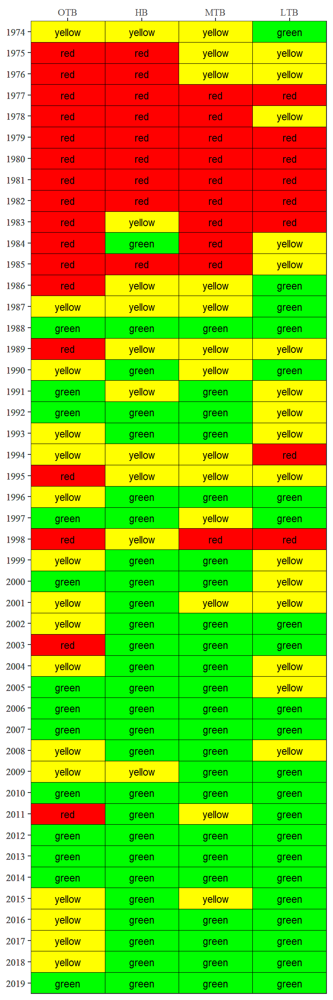

# libraries
library(leaflet)
# library(tbeptools) # remotes::install_github("tbep-tech/tbeptools")
devtools::load_all('.')
# local file path
xlsx <- '2018_Results_Updated.xls'Download and import EPCHC dataset
# load data and some light formatting
epcdata <- read_importwq(xlsx, download_latest_epchc = T)
epcdata
#> # A tibble: 25,486 x 11
#> bay_segment epchc_station SampleTime yr mo Latitude
#> <chr> <dbl> <dttm> <dbl> <dbl> <dbl>
#> 1 HB 6 2019-05-15 10:03:00 2019 5 27.9
#> 2 HB 7 2019-05-15 10:16:00 2019 5 27.9
#> 3 HB 8 2019-05-15 12:26:00 2019 5 27.9
#> 4 MTB 9 2019-05-15 11:51:00 2019 5 27.8
#> 5 MTB 11 2019-05-15 10:34:00 2019 5 27.8
#> 6 MTB 13 2019-05-15 10:45:00 2019 5 27.8
#> 7 MTB 14 2019-05-15 11:22:00 2019 5 27.8
#> 8 MTB 16 2019-05-21 11:42:00 2019 5 27.7
#> 9 MTB 19 2019-05-21 11:53:00 2019 5 27.7
#> 10 LTB 23 2019-05-21 14:16:00 2019 5 27.7
#> # ... with 25,476 more rows, and 5 more variables: Longitude <dbl>,
#> # Total_Depth_m <dbl>, Sample_Depth_m <dbl>, sd_m <dbl>, chla <dbl>#Display station locations
wqsites <- epcdata[, c('epchc_station', 'Latitude', 'Longitude')] %>%
unique()
map <- leaflet(wqsites) %>%
addProviderTiles(providers$CartoDB.Positron) %>%
addCircleMarkers(~Longitude, ~Latitude,
radius = 6,
color = 'black',
stroke = FALSE,
opacity = 0.8,
popup = ~as.character(paste('EPC Station:', epchc_station)),
group = 'Water quality') %>%
addLayersControl(overlayGroups = c('Water quality'),
options = layersControlOptions(collapsed = FALSE))
map


Plot Mean Annual Light Attenuation Values by Bay Segment


Target attainment matrix
avedat <- anlz_avedat(epcdata)
anlz_attain(avedat, magdurout = T)
#> # A tibble: 372 x 10
#> bay_segment yr var val target smallex thresh mags durats outcome
#> <chr> <dbl> <chr> <dbl> <dbl> <dbl> <dbl> <int> <dbl> <int>
#> 1 HB 1974 chla 22.4 13.2 14.1 15 2 NA 2
#> 2 HB 1975 chla 27.9 13.2 14.1 15 2 NA 2
#> 3 HB 1976 chla 29.5 13.2 14.1 15 2 NA 2
#> 4 HB 1977 chla 32.5 13.2 14.1 15 2 4 3
#> 5 HB 1978 chla 22.0 13.2 14.1 15 2 4 3
#> 6 HB 1979 chla 29.7 13.2 14.1 15 2 4 3
#> 7 HB 1980 chla 22.6 13.2 14.1 15 2 4 3
#> 8 HB 1981 chla 31.1 13.2 14.1 15 2 4 3
#> 9 HB 1982 chla 36.1 13.2 14.1 15 2 4 3
#> 10 HB 1983 chla 25.9 13.2 14.1 15 2 4 3
#> # ... with 362 more rows
anlz_attain(avedat)
#> # A tibble: 184 x 4
#> bay_segment yr chl_la outcome
#> <chr> <dbl> <chr> <chr>
#> 1 HB 1974 2_0 yellow
#> 2 HB 1975 2_2 red
#> 3 HB 1976 2_2 red
#> 4 HB 1977 3_2 red
#> 5 HB 1978 3_3 red
#> 6 HB 1979 3_3 red
#> 7 HB 1980 3_3 red
#> 8 HB 1981 3_3 red
#> 9 HB 1982 3_3 red
#> 10 HB 1983 3_0 yellow
#> # ... with 174 more rows
show_matrix(epcdata)